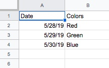

This page allows you to get a cell from a Google Sheets file.

Above is a screengrab of the Sheet that the default ID, '1cbJ3FZkZ22og6977vUJ9ZQTMnoAr6RrDQxfctYfsg4U', links to. This Sheet was made to test this webpage. The Sheet must be "Published to Web" to be accesible. To use, enter a row and column value and press go.
Go
Results